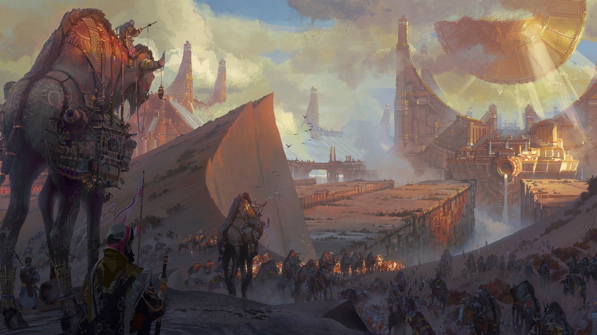
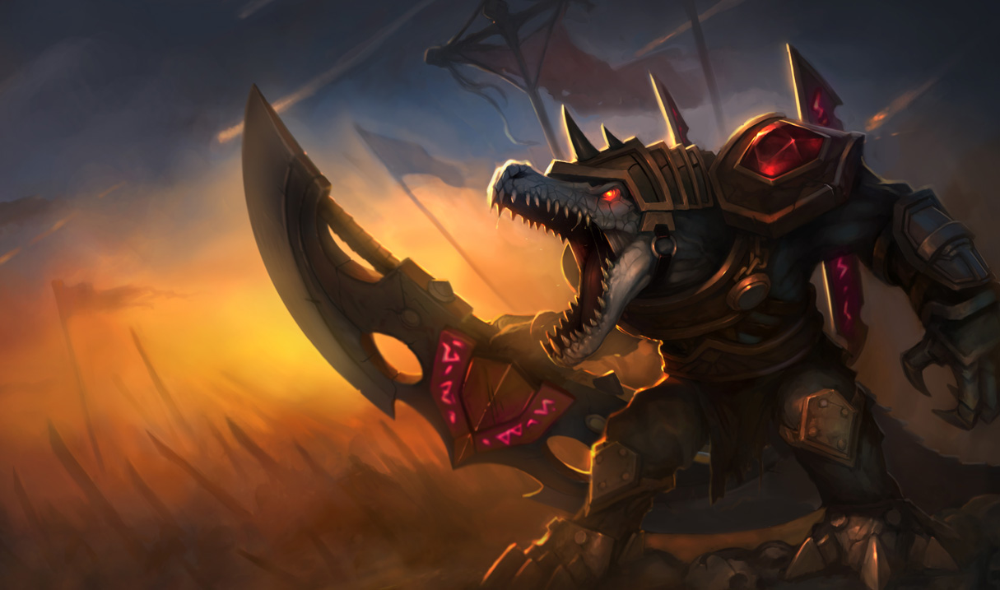
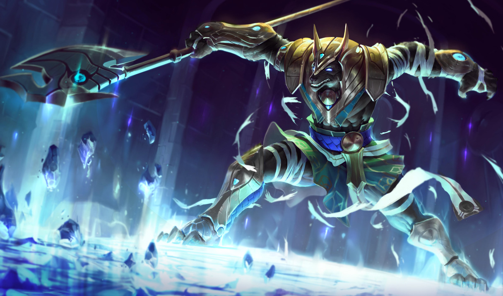
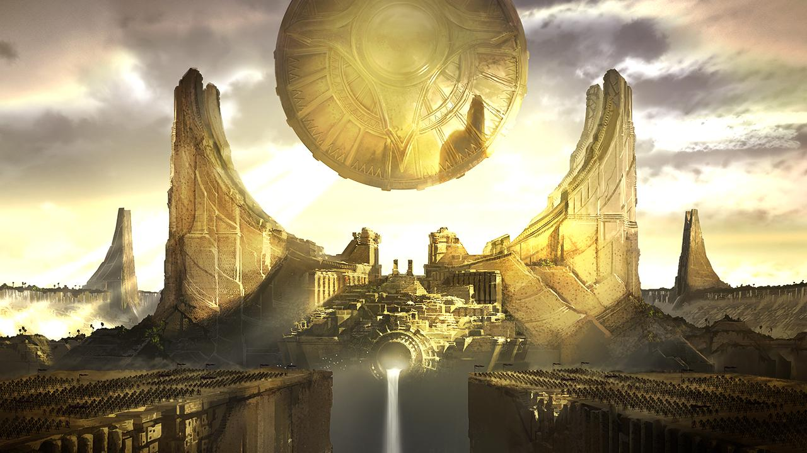
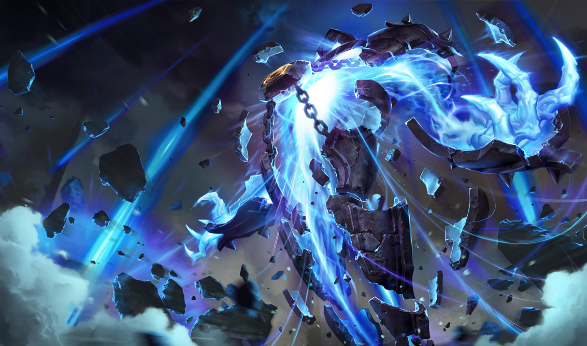

Shurima
Shurima is in a desert region on the South side of Runeterra. It was once a great empire, ruled by an emperor (of course). The youngest and least favored son of the emperor went by the name of Azir. He was never meant to be anything great. He had so many older siblings, he would probably never become king. So, rather than training to fight with Renekton, he spent his time reading texts from the Great Library of Nasus.
 Azir soon met a slave boy who also spent most days browsing though the texts of the Library. They became very good friends, and against the law stating slaves can't have names, he called the slave Xerath. Everyday, Xerath and Azir would learn more and more about Shurima's past. One night, while traveling with his family and Renekton, Azir met up with Xerath to draw and record the stars, to add them to the Great Library. Unfortunately, the Royal Caravan everyone else was sleeping in got attacked by assassins, sent by the emperor's enemies. One of said assassins found the boys, and was about to slit Azir's throat, when Xerath jumped at the assassin and went into hand to hand combat. Azir realized what happened, drew his dagger, and killed the assassin. He then rushed back to the Caravan, bu by the time he got there, all his brothers were dead. Renekton had, however, been able to save the emperor, and defeat the assassins. Azir tried to tell his father about Xerath's courage, but his father didn't care. On return to the empire, Azir's life was hanging by a thread. His father hated him, and wished he had died rather than his brothers, AND his mother was still able to bear children. Still, he started to train with Renekton and soon became skilled in the art of combat. Azir made Xerath his right-hand man, and gave him the task of seeking out knowledge wherever he could find it. Years passed, nut Azir's mother still hadn't had a child yet. All the soon-to-be emperors died before birth. Many people believed this was caused by a curse, and the Azir had something to do with it. He claimed innocence, and executed those who accused him openly. Eventually, the queen gave birth to a healthy child, and for a bit, all was well. Unfortunately, on the night of the birth, a storm struck Shurima. Lightning stuck the queen's chambers, over and over again. Bothe the queen and the child died. It is said that the emperor went so mad with grief, that he took his own life. Whether it was true or not, the Queen, the child, the emperor, and even the guards were all dead by morning. Their remains lay on the ground of the chambers, in form of charred skeletons. Azir, with Xerath by his side, took control of Shurima, and became the emperor. A glorious rebirth of the empire followed. Azir had many sons, the empire was expanded, and all with the help of Xerath. Eventually, Azir wanted to become an ascended.
He wanted to take a place next to Nasus and Renekton, and all their ancestors. The day of the ritual came, and everyone was there, watching. Nasus and Renekton weren't there, having been sent on an emergency mission by Xerath, but Azir felt his day had come to become ascended. Before he started, he turned to Xerath and freed him. Not just him, but all slaves. He told Xerath they would be brothers for eternity. Unknown to Azir, Xerath had studied more than just the History of Shurima. He had also been studying the arts of dark magic. His desire to be free had been growing over the years, and turned into a burning hatred for Azir. As the ascension began, Xerath unleashed his powers and blatsed him from the protective runic circle. Without the protection, Azir was consumed by the sun, and Xerath took his place in the circle. Xerath was filled with light and power, and began ascending. However, the power was not meant for Xerath, not meant do be diverted in the middle of a ritual. The power exploded outwards, laying waste to all of Shurima. 
Everyone in the area simply turned to sand. Azir died, and had no idea any of this happened, because he died right before it all happened. Thousands of years later, he was reborn as an incomplete, animated sand formed as himself. He walked through what was left of his empire, and saw a woman with a knife wound in her back. In her features, he saw a distant echo of his own bloodline. He picked up this daughter of Shurima, and carried her to what was once the Oasis of the Dawn. With each step closer to the Oasis, the dry area began filling with clear water. He immersed her body in the waters, and the blood on her body washed away. All that was left was a single, faint scar of where the dagger had been. Because of that simple act of selflessness, Azir was lifted as the magic of Shurima renewed him, making him the ascended being he was meant to be. The city rose from the sands, and became new, the sun disc floated back into the sky once more. As Azir climbed the steps to the new temple, the sand formed ghosts of the events that took place during the last moments of his city, long ago. Azir saw Xerath's treachery unfold, he saw his own family murdered. He saw his entire empire stolen from him. He now understood the hatred of his former friend. Azir, as an ascended being, sensed Xerath somewhere in the world, and summoned an army of sand soldiers to march alongside him as he went to reclaim what was once his. As he walked off, he shouted, "XERATH. YOUR CRIMES WILL NOT GO UNPUNISHED."